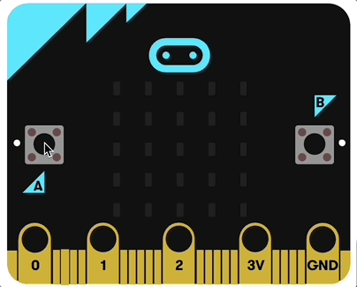

Prácticas
Un pulsador es un dispositivo de entrada. Sería como un sensor que detecta si alguien lo está pulsando o no.
Los pulsadores se utilizan mucho en los circuitos eléctricos y electrónicos porque permiten controlar manualmente los circuitos de manera sencilla. Cierra el circuito y permite el paso de corriente eléctrica durante el tiempo que permanece accionado o pulsado.
Suele estar presente en la vida cotidiana, como por ejemplo, en los controles de las televisiones, los timbres, etc.
Micro: bit tiene dos pulsadores en su cara delantera, con los que podemos interactuar: son el pulsador A y el pulsador B:

Disponemos de un bloque para detectar cuándo se han pulsado los pulsadores. El mismo bloque nos sirve para detectar tres posibles eventos:
- Se pulsa el botón A
- Se pulsa el botón B
- Se pulsan los dos botones, A y B, a la vez.
Ese bloque se llama al presionarse el botón y está en la categoría "Entrada". Tiene un desplegable para elegir qué evento concreto queremos detectar:

Las prácticas que debes realizar antes de poder hacer esta tarea son estas:
Práctica 1 - ¿Cómo te sientes?
En esta práctica, se va a realizar un programa que nos diga como se siente la persona que acciona la placa.
- Si pulsa el botón A, mostrará una cara feliz.
- Si pulsa el botón B, mostrará un cara triste.
En este caso el programa es muy sencillo pero, como siempre, te lo muestro directamente acabado si le das al botón de abajo. Ya sabes dónde encontrar los bloques necesarios para hacerlo:
{kind=link}
Escribe el código y comprueba en tu simulador que las caras cambian cada vez que pulsas el botón correspondiente. Debe funcionar así:

Práctica 2 - Pulsar los dos botones a la vez
En este caso vamos a detectar cuándo el usuario pulsa los dos botones a la vez. Lo que haremos es mostrar en la pantalla la letra "A" si se pulsa el botón A, la letra "B" si se pulsa el botón B y la letra "C" si se pulsan los dos a la vez.
Creo que ya serías capaz de hacerlo por tus propios medios pero, por si acaso, aquí te dejo el código necesario:
El funcionamiento tienes que comprobarlo en la placa virtual. Te preguntarás ¿cómo pulso los dos botones a la vez con el ratón? No te preocupes, está todo pensado y tu placa virtual tiene un "botón virtual" (que no existe en la Micro:bit real) que simula la pulsación de los dos botones A y B a la vez. Puedes verlo en acción en esta animación:
{kind=link}
Fíjate que este "botón virtual" aparece automáticamente si has utilizado en tu código el bloque al presionarse el botón A+B. Si no usas ese bloque, ese botón no aparece en la placa virtual.